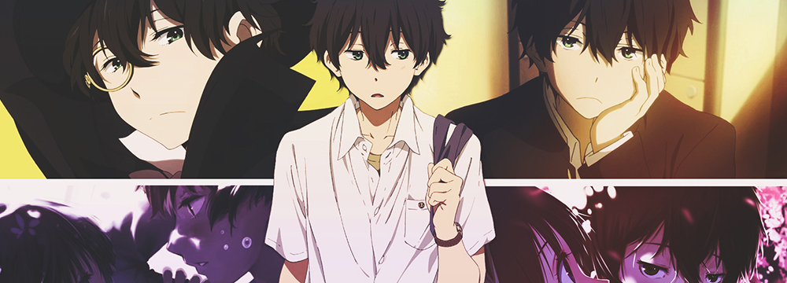
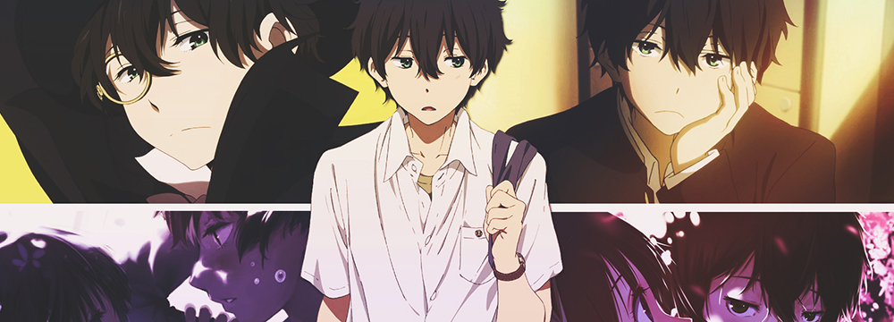
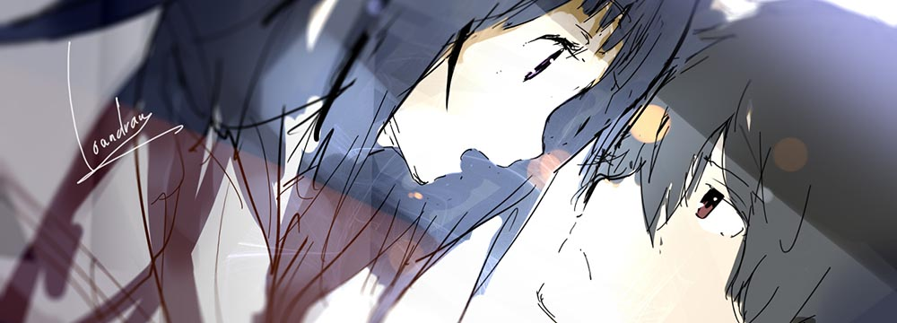
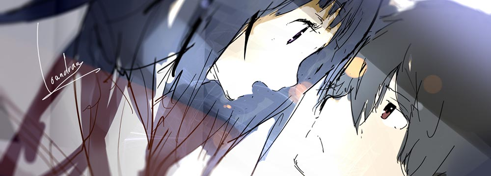

 

简介

《冰菓》是日本神山高校古典部OB会出品，贺东招二等人担任编剧，武本康弘执导，中村悠一、佐藤聪美、阪口大助、茅野爱衣等人担任配音的悬疑动画。 该动画改编自米泽穗信著作的系列小说《古典部系列》。
语录
要变得坚强。 如果很软弱的话，终有一日会连悲鸣都无法发出，活得像行尸走肉一般。。
在我灰色的青春，遇见了彩色的你。
有能力的人不自知，对其他人是一种讽刺。
名作，自打它诞生那天起便是名作。
没必要的事就不做，必要的事就尽快做。
剧情简介
少年推理的作品。在其他正要展开「蔷薇色」高中生活的高中生中，本作的男主角折木奉太郎却是一个「灰色」的节能主义者，即凡没必要的事不做， 因为不想后悔，有人说他疏离、厌世也没所谓，因为这就是他的作风。这样的他，却因为姐姐的命令而进入了濒临废社的「古籍研究社」 ，虽然好不容易招到了四名新社员，但却又卷入了四十五年前社长突然退学的谜团之中。而社长当年留下命名为「冰菓」的社刊，内里究竟又隐藏了什么引人落泪的讯息... 虽然好不容易招到了四名新社员，但却又卷入了四十五年前社长突然退学的谜团之中。而社长当年留下命名为「冰菓」的社刊，内里究竟又隐藏了什么引人落泪的讯息...
影片评价
冰菓是件蛮惬意的事儿。这种感觉就好比跟三两好友相约午后街角咖啡厅， 一起阅读一本大家都很喜欢的小说。没有多余的强迫，没有过分的期待；淡淡的感悟，淡淡的享受，淡淡的共鸣。 冰菓有着华丽精致的美貌外封跟虚节内敛的质朴内核，就如同带点小资情结的书卷气女子，自顾自的美丽，自顾自的才情，自顾自的自负与自伤。